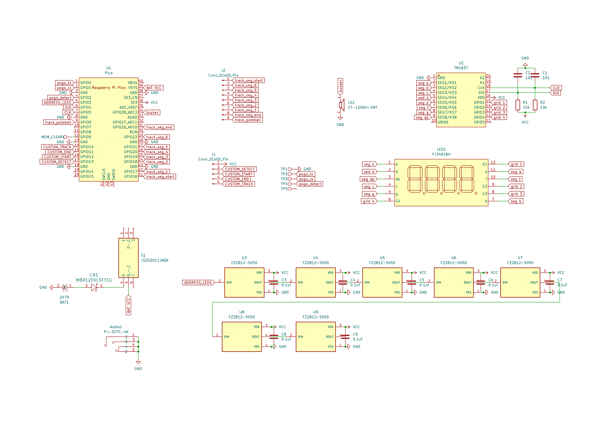

About The Badge
This year's badge primary function is a race to see how fast you can make it from start to finish. There are 3 difficulty modes: easy, normal, and hard. These modes simply change how long the system will allow you to be "off track". In additional to the race functionality, there is a also a synthezier for playing music and a reaction test to see how quickly you can respond to a starting light. When inside the configration mode (hold to pad on top of flag pole) you can change diffuclty, turn the sound on/off, change idle LED patterns, view highscores, and view earned CTF flags.
The badge has an acheivement system. The more you complete, the more LED patterns and CTF flags you unlock! There are 8 levels to acheive:
- Finish a race on "easy" mode
- Finish a race on "norm" mode
- Finish a race on "hard" mode
- Finish a race on "easy" mode with a time of 30 or less
- Finish a race on "norm" mode with a time of 60 or less
- Finish a race on "hard" mode with a time of 80 or less
- Finish a reaction test with a time under 10
- Build and insert a bonus track (see Activity for more info)
Technical Bits
This year's badge is a deviation from the last two year's of kernelcon badges, which were analog designs with no microntrollers. The badge has a brain this year and it is a Raspberry Pi Pico. Turn's out its actually cheaper, and you end up with nicer quality parts, if you use an entire Pico. As opposed to a scratch build using the RP2040 (the main microcontroller on the Pico). So that's the route we went! The badge uses a TM1637 to drive the 7 segment display and is powered by 3 AAA batteries. It has 7 addressable RGB LEDs and a buzzer for all sorts of visual and audio shenangians.
Manufacturing
The badge was designed and prototyped by zonksec (Tyler Rosonke), with collaboration from popcorndan and elaboratreues. Assembly was done by Cyber City Circuits in Augusta, GA.
Schematic
Yes. It's a bit hard to read on this page. Open it in a new tab or get a PDF.
